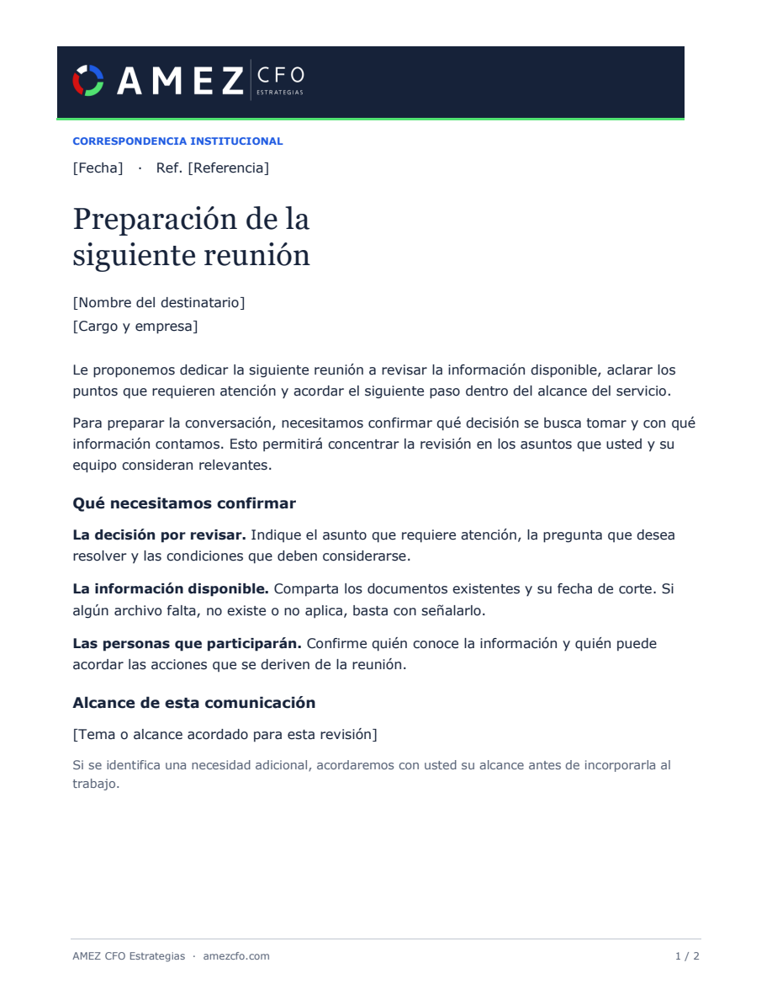

Making financial
analysis clear
Identity, language and resources to build on the analysis
Leadership · Financial communication · Brand system

Identity supports the conversation. Shared resources help the team build on it.
Explore the contribution ↓From analysis to the conversation
Analysis needs an audience that understands its implications and a team that can build on it. The challenge was to translate the firm’s methodology into clear materials for introducing services, onboarding clients and reviewing results.
My contribution
I led a brand and communication system connecting identity, language, data visualisation and practical work materials. It includes commercial and financial review presentations, reusable documents, educational content and proposals for digital channels.
Design that supports financial understanding
Organise
Structure information for each financial conversation.
Explain
Connect the numbers with assumptions and decisions.
Build on it
Create reusable resources with shared usage principles.
Resources to build on
Identity becomes useful when it supports the team’s conversations and documents.

A collection with shared usage principles, from presentations to documentation.
View the applications in context · PDF ↗A methodology others can build on
We built a collection of resources and templates with shared usage principles. My contribution was to connect design with financial understanding: structure information, make assumptions visible and help analysis lead to a conversation about decisions.
- Communicating financial results
- Financial information design
- Reusable methodology
The examples show the firm’s communication materials. They contain no client files or client results.
Back to projects ←